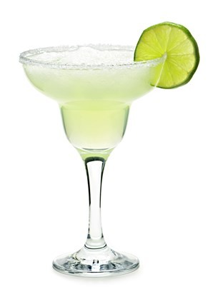

Long Island Iced Tea

A cocktail that never seems to go out of style. The potent concoction of rum, tequila, vodka, gin and triple sec finished with a mixture of sweet and sour cola and lemon juice. Tea isn't actually an addition to the drink, but the ingredients used predominantly the cola, provide the profile of tea with much more flavour.
Show ingredients
Ingredients; 1/2 oz vodka 1/2 oz gin 1/2 oz light rum 1/4 oz tequila 1/2 oz triple sec 1 Tbsp. fresh lemon juice or possibly to taste 6 oz cola or potentially to fill broken ice
Californication
Californication as used by the Red Hot Chili Peppers means the mixing of different cultures. The cocktail reflects this with the various spirits used within the cocktail from all over the world. A mixture of run, vodka, tequila and gin finished with orange liqueur, lemon juice and orange juice to mask the various spirits used throughout. Strong and yet sweet. The cocktail is finished with either a slice of orange or a twisted peel of orange rind.
Show ingredients
Ingredients; 1/2 oz of vodka, gin, white rum and tequila Freshly squeezed lemon juice 1 oz Orange liqueur 3 oz’s fresh squeezed orange juice Garnish with slice of fresh cut orange
Pina Colada
The classic tropical cocktail, with a distinctive look and taste. More of a smoothie as opposed to an alcoholic beverage. The modest yet perfect blend of coconut milk, rum and pineapple juice has been a firm favourite throughout the years.
Show ingredients
Ingredients; 2 oz Captain Morgan Original Spiced Rum 1 Maraschino cherries 6 oz pina colada mix 2 oz pineapple juice 1 pineapple quartered and sliced
Margarita
The simple mixture of tequila, triple sec and lime juice is often blended with ice but is traditionally served on the rocks. The cocktail is generally presented in a salt rimmed glass. Various fruity versions have been adapted from the traditional lime, such as raspberry, peach and strawberry.
Show ingredients
Ingredients; 1 (6 ounces) can frozen limeade concentrate 6 fluid ounces tequila 1 oz Cointreau orange liqueur 2 fluid ounces triple sec
Caipirinha
Originally based on a remedy to cure Spanish flu, the national drink of Brazil is made with cachaca (spirit from a sugar cane) or white rum/vodka, brown sugar and lime juice.
Show ingridients
Ingredients; 2 oz Cachaca (Rum) 1 lime 1 tsp sugar
Mint Julep
The concoction of Bourbon, a little bit of water, powdered and granulated sugar and plenty of mint has long been a very popular way to drink a cocktail. Simple yet refined.
Show ingredients
Ingredients; 1/2 cup water. 1/2 cup white sugar. 2 tablespoons roughly sliced fresh mint leaves. 1 cup Kentucky bourbon. 2 sprigs fresh mint leaves for garnish
Mai Tai

The Mai Tai is a Polynesian-style cocktail that has a fruity tropical taste sweet and vibrant. The mixture of light and dark rum, orange curacao, orgeat syrup and lime juice has been a symbol of Tahitian culture ever since the drink was first created.
Show ingredients
Ingredients; 1 oz light rum 1 oz gold rum 1/2 oz Orange Curacao liqueur 1/2 oz orgeat syrup (almond syrup) 1/2 oz lime juice 1 oz dark rum
Mojito
The Mojito complimenting summer perfectly with a fresh minty taste. The mixture of white rum, mint, lime juice, sugar and soda water is crisp and clean with a relatively low alcohol content, the soda water can be replaced with sprite or 7-up. When preparing a mojito always crush the mint leaves as opposed to dicing to unlock oils that will assist with enhancing the minty flavour.
Show ingredients
Ingredients; 10 fresh mint leaves 1/2 lime, cut into 4 wedges 2 tablespoons white sugar, or to taste 1 cup ice 1 1/2 fluid ounces white rum 1/2 cup club soda
Cosmopolitan
The tangy concoction of vodka, triple sec, lime juice and cranberry juice has managed to leapfrog the venerable screwdriver as many vodka drinkers prefer the Cosmopolitan’s cleaner and slightly tart taste. The keys to the preparation of a Cosmopolitan are a good brand of cranberry juice and Cointreau Triple Sec, two essential elements to the drink.
Show ingredients
Ingredients; 2 oz Vodka 1 oz Cointreau 1/2 oz Cranberry juice 1/2 oz Fresh sour mix Lemon twist for garnish